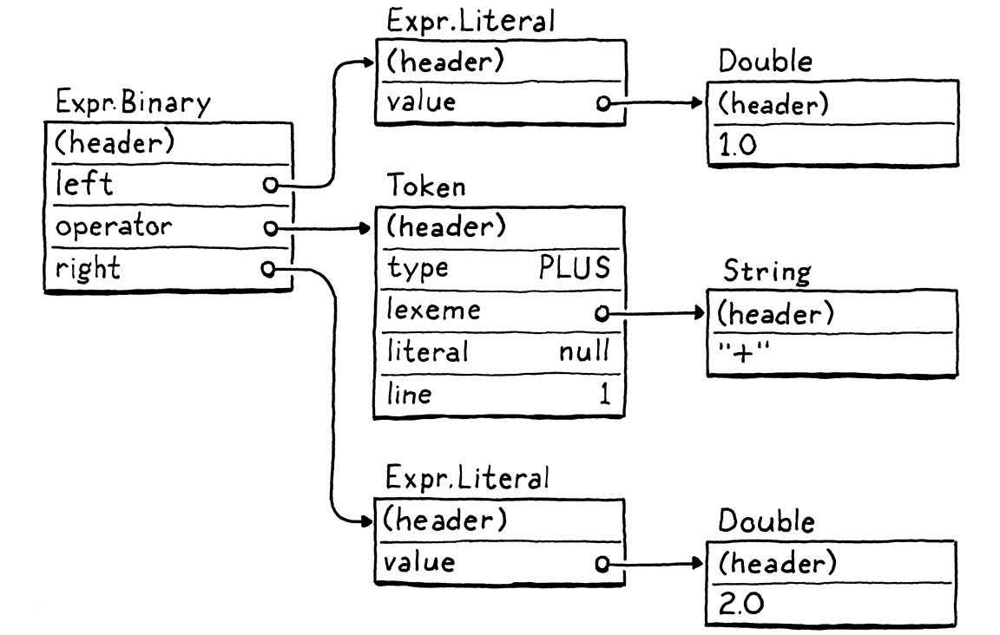
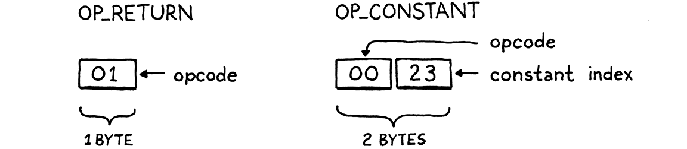

Chunks of Bytecode
Nếu bạn thấy mình đang dành gần như toàn bộ thời gian cho lý thuyết, hãy bắt đầu dành chút sự chú ý cho những thứ thực hành; điều đó sẽ cải thiện lý thuyết của bạn. Nếu bạn thấy mình đang dành gần như toàn bộ thời gian cho thực hành, hãy bắt đầu dành chút sự chú ý cho những thứ lý thuyết; điều đó sẽ cải thiện việc thực hành của bạn.
Donald Knuth
Chúng ta đã có một bản cài đặt hoàn chỉnh của Lox với jlox, vậy tại sao cuốn sách này vẫn chưa kết thúc? Một phần là vì jlox dựa vào JVM để làm rất nhiều việc cho chúng ta. Nếu muốn hiểu cách một interpreter hoạt động đến tận “tầng kim loại” (hardware), chúng ta cần tự xây dựng những phần đó.
Một lý do còn cơ bản hơn khiến jlox chưa đủ là vì nó quá chậm. Một tree-walk interpreter thì ổn với một số loại ngôn ngữ bậc cao, khai báo. Nhưng với một ngôn ngữ imperative đa dụng — kể cả một ngôn ngữ “scripting” như Lox — thì không ổn chút nào. Hãy xem đoạn script nhỏ này:
fun fib(n) { if (n < 2) return n; return fib(n - 1) + fib(n - 2); } var before = clock(); print fib(40); var after = clock(); print after - before;
Trên laptop của tôi, jlox mất khoảng 72 giây để chạy xong. Một chương trình C tương đương chỉ mất nửa giây. Ngôn ngữ scripting kiểu dynamic typing của chúng ta sẽ không bao giờ nhanh bằng một ngôn ngữ static typing với quản lý bộ nhớ thủ công, nhưng chúng ta cũng không cần chấp nhận việc nó chậm hơn hơn hai bậc độ lớn.
Chúng ta có thể chạy jlox qua profiler rồi bắt đầu tinh chỉnh các điểm nóng, nhưng điều đó chỉ giúp được đến một mức nào đó. Mô hình execute — đi bộ qua AST — về cơ bản là một thiết kế sai cho mục tiêu này. Chúng ta không thể “vi chỉnh” nó để đạt hiệu năng mong muốn, cũng như bạn không thể đánh bóng một chiếc AMC Gremlin thành một chiếc SR-71 Blackbird.
Chúng ta cần nghĩ lại mô hình cốt lõi. Chương này sẽ giới thiệu mô hình đó — bytecode — và bắt đầu xây dựng interpreter mới của chúng ta, clox.
14 . 1Bytecode?
Trong kỹ thuật, hiếm khi có lựa chọn nào mà không phải đánh đổi. Để hiểu rõ tại sao chúng ta chọn bytecode, hãy so sánh nó với một vài phương án khác.
14 . 1 . 1Tại sao không đi bộ qua AST?
Interpreter hiện tại của chúng ta có vài điểm mạnh:
-
Trước hết, chúng ta đã viết xong nó rồi. Hoàn thành. Và lý do chính là vì kiểu interpreter này rất dễ cài đặt. Biểu diễn runtime của code ánh xạ trực tiếp với cú pháp. Từ parser sang cấu trúc dữ liệu cần cho runtime gần như không tốn công sức.
-
Nó portable. Interpreter hiện tại được viết bằng Java và chạy trên bất kỳ nền tảng nào Java hỗ trợ. Chúng ta hoàn toàn có thể viết một bản mới bằng C với cùng cách tiếp cận, rồi biên dịch và chạy ngôn ngữ của mình trên hầu như mọi nền tảng.
Đó là những lợi thế thật sự. Nhưng, ngược lại, nó không tiết kiệm bộ nhớ. Mỗi mẩu cú pháp trở thành một node AST. Một biểu thức Lox nhỏ như 1 + 2 lại biến thành một đống object với hàng loạt con trỏ liên kết, trông như thế này:

Mỗi con trỏ như vậy lại thêm 32 hoặc 64 bit overhead vào object. Tệ hơn, việc rải dữ liệu khắp heap trong một mạng lưới object lỏng lẻo gây ra vấn đề nghiêm trọng cho spatial locality.
CPU hiện đại xử lý dữ liệu nhanh hơn nhiều so với tốc độ lấy dữ liệu từ RAM. Để bù lại, chip có nhiều tầng cache. Nếu một vùng nhớ đã có sẵn trong cache, nó có thể được nạp nhanh hơn rất nhiều — nhanh hơn tới 100 lần.
Dữ liệu vào cache bằng cách nào? Bộ xử lý sẽ “đoán” và nạp sẵn cho bạn. Nguyên tắc khá đơn giản: mỗi khi CPU đọc một chút dữ liệu từ RAM, nó sẽ lấy luôn một cụm byte liền kề và đưa vào cache.
Nếu chương trình của chúng ta tiếp theo cần dữ liệu nằm trong cùng cache line đó, CPU sẽ chạy mượt như một dây chuyền sản xuất trơn tru. Chúng ta rất muốn tận dụng điều này. Để dùng cache hiệu quả, cách chúng ta biểu diễn code trong bộ nhớ nên đặc và có thứ tự giống như khi nó được đọc.
Giờ hãy nhìn lại cái cây ở trên. Những sub-object đó có thể nằm bất cứ đâu. Mỗi bước mà tree-walker đi theo một tham chiếu đến node con có thể vượt ra ngoài phạm vi cache và buộc CPU phải chờ cho đến khi một cụm dữ liệu mới được nạp từ RAM. Chỉ riêng overhead của các node trong cây với tất cả các trường con trỏ và header object đã đủ để đẩy chúng ra xa nhau và ra khỏi cache.
AST walker của chúng ta còn có overhead khác như interface dispatch và Visitor pattern, nhưng chỉ riêng vấn đề locality cũng đã đủ để biện minh cho một cách biểu diễn code tốt hơn.
14 . 1 . 2Tại sao không biên dịch thẳng sang native code?
Nếu bạn muốn chạy thật nhanh, bạn sẽ muốn loại bỏ tất cả những tầng gián tiếp đó. Xuống tận “tầng kim loại”. Machine code. Nghe thôi cũng đã thấy nhanh rồi. Machine code.
Biên dịch trực tiếp sang tập lệnh gốc mà chip hỗ trợ là cách mà các ngôn ngữ nhanh nhất vẫn làm. Nhắm tới native code đã là lựa chọn hiệu quả nhất từ những ngày đầu, khi các kỹ sư thực sự viết tay chương trình bằng machine code.
Nếu bạn chưa từng viết machine code, hoặc “người anh em” dễ đọc hơn một chút là assembly code, thì tôi sẽ giới thiệu nhẹ nhàng nhất có thể. Native code là một chuỗi dày đặc các thao tác, được mã hóa trực tiếp ở dạng nhị phân. Mỗi lệnh dài từ một đến vài byte, và gần như ở mức thấp đến mức… tê liệt não. “Chuyển một giá trị từ địa chỉ này sang thanh ghi kia.” “Cộng hai số nguyên trong hai thanh ghi này.” Đại loại như vậy.
CPU sẽ chạy qua các lệnh đó, giải mã và execute từng lệnh theo thứ tự. Không có cấu trúc cây như AST của chúng ta, và luồng điều khiển được xử lý bằng cách nhảy từ điểm này sang điểm khác trong code. Không gián tiếp, không overhead, không nhảy lung tung hay lần theo con trỏ.
Nhanh như chớp, nhưng hiệu năng đó phải trả giá. Trước hết, biên dịch sang native code không hề dễ. Hầu hết các chip phổ biến ngày nay đều có kiến trúc phức tạp kiểu Byzantine với hàng đống lệnh tích tụ qua nhiều thập kỷ. Chúng đòi hỏi kỹ thuật phân bổ thanh ghi tinh vi, pipelining, và sắp xếp lệnh.
Và tất nhiên, bạn đã vứt bỏ tính portable. Dành vài năm để thành thạo một kiến trúc nào đó thì bạn cũng chỉ mới chạy được trên một trong số nhiều tập lệnh phổ biến. Muốn ngôn ngữ của mình chạy trên tất cả, bạn phải học tất cả các tập lệnh đó và viết một back end riêng cho từng cái.
14 . 1 . 3Bytecode là gì?
Hãy ghi nhớ hai điểm này. Ở một đầu, tree-walk interpreter thì đơn giản, portable, nhưng chậm. Ở đầu kia, native code thì phức tạp, phụ thuộc nền tảng nhưng nhanh. Bytecode nằm ở giữa. Nó giữ được tính portable của tree-walker — trong cuốn sách này, chúng ta sẽ không phải đụng tay vào assembly code. Nó hy sinh một chút sự đơn giản để đổi lấy hiệu năng cao hơn, dù vẫn không nhanh bằng native code hoàn toàn.
Về cấu trúc, bytecode giống machine code. Nó là một chuỗi tuyến tính, dày đặc các lệnh nhị phân. Điều này giúp giảm overhead và tận dụng cache tốt hơn. Tuy nhiên, nó là một tập lệnh đơn giản hơn nhiều, ở mức trừu tượng cao hơn bất kỳ con chip thực nào. (Trong nhiều định dạng bytecode, mỗi lệnh chỉ dài đúng một byte, vì thế mới gọi là “bytecode”.)
Hãy tưởng tượng bạn đang viết một native compiler từ một ngôn ngữ nguồn nào đó và được toàn quyền thiết kế kiến trúc dễ nhắm tới nhất. Bytecode gần giống như vậy. Nó là một tập lệnh lý tưởng hóa, giúp cuộc sống của người viết compiler dễ dàng hơn.
Vấn đề của một kiến trúc “ảo tưởng” là… nó không tồn tại. Chúng ta giải quyết điều đó bằng cách viết một emulator — một con chip giả lập bằng phần mềm, đọc và execute bytecode từng lệnh một. Hay nói cách khác là một virtual machine (VM).
Lớp giả lập này thêm overhead, đây là lý do chính khiến bytecode chậm hơn native code. Nhưng đổi lại, nó cho chúng ta tính portable. Viết VM bằng một ngôn ngữ như C — vốn đã được hỗ trợ trên mọi máy mà ta quan tâm — và ta có thể chạy emulator đó trên bất kỳ phần cứng nào mình muốn.
Đây chính là con đường chúng ta sẽ đi với interpreter mới, clox. Chúng ta sẽ theo bước các bản cài đặt chính của Python, Ruby, Lua, OCaml, Erlang, và nhiều ngôn ngữ khác. Ở nhiều khía cạnh, thiết kế VM của chúng ta sẽ song song với cấu trúc của interpreter trước:

Tất nhiên, chúng ta sẽ không cài đặt các giai đoạn này theo đúng thứ tự. Giống như interpreter trước, chúng ta sẽ “nhảy qua nhảy lại”, xây dựng từng tính năng ngôn ngữ một. Trong chương này, chúng ta sẽ dựng bộ khung của ứng dụng và tạo các cấu trúc dữ liệu cần thiết để lưu trữ và biểu diễn một chunk bytecode.
14 . 2Bắt đầu thôi
Còn bắt đầu từ đâu nữa, nếu không phải là main()? Mở trình soạn thảo quen thuộc của bạn và bắt đầu gõ.
create new file
#include "common.h" int main(int argc, const char* argv[]) { return 0; }
Từ hạt giống nhỏ bé này, chúng ta sẽ phát triển toàn bộ VM. Vì C cung cấp cho chúng ta quá ít, nên trước tiên ta cần “bón đất” một chút. Một phần việc đó nằm trong file header này:
create new file
#ifndef clox_common_h #define clox_common_h #include <stdbool.h> #include <stddef.h> #include <stdint.h> #endif
Có một vài kiểu dữ liệu và hằng số mà chúng ta sẽ dùng xuyên suốt interpreter, và đây là nơi tiện lợi để đặt chúng. Hiện tại, đó là NULL quen thuộc, size_t, kiểu Boolean bool của C99, và các kiểu số nguyên có kích thước rõ ràng — uint8_t và các “người bạn” của nó.
14 . 3Các khối lệnh (Chunks of Instructions)
Tiếp theo, chúng ta cần một module để định nghĩa cách biểu diễn code. Tôi đã dùng từ “chunk” để chỉ các chuỗi bytecode, vậy nên hãy chính thức dùng nó làm tên cho module này.
create new file
#ifndef clox_chunk_h #define clox_chunk_h #include "common.h" #endif
Trong định dạng bytecode của chúng ta, mỗi instruction có một byte operation code (thường được viết tắt là opcode). Con số này quyết định loại instruction mà chúng ta đang xử lý — cộng, trừ, tra cứu biến, v.v. Chúng ta sẽ định nghĩa chúng ở đây:
#include "common.h"
typedef enum { OP_RETURN, } OpCode;
#endif
Hiện tại, ta bắt đầu với một instruction duy nhất, OP_RETURN. Khi VM của chúng ta đầy đủ tính năng, instruction này sẽ có nghĩa là “trả về từ hàm hiện tại”. Tôi thừa nhận là nó chưa hữu ích lắm, nhưng ta phải bắt đầu từ đâu đó, và đây là một instruction đặc biệt đơn giản, vì những lý do mà ta sẽ nói đến sau.
14 . 3 . 1Mảng động chứa các instruction
Bytecode là một chuỗi các instruction. Sau này, chúng ta sẽ lưu thêm một số dữ liệu khác cùng với các instruction, nên hãy tạo luôn một struct để chứa tất cả.
} OpCode;
add after enum OpCode
typedef struct { uint8_t* code; } Chunk;
#endif
Hiện tại, nó chỉ đơn giản là một lớp bọc quanh một mảng byte. Vì chúng ta không biết trước kích thước mảng cần bao nhiêu trước khi bắt đầu compile một chunk, nên nó phải là mảng động. Mảng động là một trong những cấu trúc dữ liệu tôi yêu thích nhất. Nghe có vẻ giống như việc nói “vanilla là vị kem yêu thích của tôi” vậy, nhưng hãy nghe tôi giải thích. Mảng động mang lại:
- Lưu trữ dày đặc, thân thiện với cache
- Truy cập phần tử theo chỉ số trong thời gian hằng số
- Thêm phần tử vào cuối mảng trong thời gian hằng số
Chính những đặc điểm này là lý do chúng ta dùng mảng động liên tục trong jlox, dưới dạng lớp ArrayList của Java. Giờ đây khi ở trong C, chúng ta sẽ tự viết lấy. Nếu bạn đã quên cách mảng động hoạt động, ý tưởng khá đơn giản: ngoài mảng dữ liệu, ta giữ thêm hai con số — số phần tử đã được cấp phát (“capacity”) và số phần tử thực sự đang dùng (“count”).
typedef struct {
in struct Chunk
int count; int capacity;
uint8_t* code; } Chunk;
Khi thêm một phần tử, nếu count nhỏ hơn capacity, tức là mảng vẫn còn chỗ trống. Ta chỉ cần lưu phần tử mới vào đó và tăng count.

Nếu không còn chỗ trống, quá trình sẽ phức tạp hơn một chút.

- Cấp phát một mảng mới với dung lượng lớn hơn.
- Sao chép các phần tử hiện có từ mảng cũ sang mảng mới.
- Lưu
capacitymới. - Giải phóng mảng cũ.
- Cập nhật
codeđể trỏ tới mảng mới. - Lưu phần tử mới vào mảng mới khi đã có chỗ.
- Cập nhật
count.
Chúng ta đã có struct, giờ hãy viết các hàm để làm việc với nó. C không có constructor, nên ta khai báo một hàm để khởi tạo một chunk mới.
} Chunk;
add after struct Chunk
void initChunk(Chunk* chunk);
#endif
Và cài đặt nó như sau:
create new file
#include <stdlib.h> #include "chunk.h" void initChunk(Chunk* chunk) { chunk->count = 0; chunk->capacity = 0; chunk->code = NULL; }
Mảng động bắt đầu hoàn toàn rỗng. Ta thậm chí chưa cấp phát mảng thô. Để thêm một byte vào cuối chunk, ta dùng một hàm mới.
void initChunk(Chunk* chunk);
add after initChunk()
void writeChunk(Chunk* chunk, uint8_t byte);
#endif
Đây là nơi công việc thú vị diễn ra.
add after initChunk()
void writeChunk(Chunk* chunk, uint8_t byte) { if (chunk->capacity < chunk->count + 1) { int oldCapacity = chunk->capacity; chunk->capacity = GROW_CAPACITY(oldCapacity); chunk->code = GROW_ARRAY(uint8_t, chunk->code, oldCapacity, chunk->capacity); } chunk->code[chunk->count] = byte; chunk->count++; }
Việc đầu tiên là kiểm tra xem mảng hiện tại đã đủ chỗ cho byte mới chưa. Nếu chưa, ta cần mở rộng mảng để có chỗ. (Trường hợp này cũng xảy ra ngay lần ghi đầu tiên khi mảng là NULL và capacity bằng 0.)
Để mở rộng mảng, trước tiên ta tính toán capacity mới và mở rộng mảng tới kích thước đó. Cả hai thao tác cấp phát bộ nhớ cấp thấp này được định nghĩa trong một module mới.
#include "chunk.h"
#include "memory.h"
void initChunk(Chunk* chunk) {
Vậy là đủ để bắt đầu.
create new file
#ifndef clox_memory_h #define clox_memory_h #include "common.h" #define GROW_CAPACITY(capacity) \ ((capacity) < 8 ? 8 : (capacity) * 2) #endif
Macro này tính toán capacity mới dựa trên capacity hiện tại. Để đạt hiệu năng mong muốn, điều quan trọng là nó phải tăng theo tỷ lệ so với kích thước cũ. Chúng ta tăng gấp đôi, đây là cách khá phổ biến. 1.5× cũng là một lựa chọn thường gặp.
Ta cũng xử lý trường hợp capacity hiện tại bằng 0. Khi đó, ta nhảy thẳng lên 8 phần tử thay vì bắt đầu từ 1. Điều này tránh việc cấp phát lại quá nhiều khi mảng còn rất nhỏ, đổi lại là lãng phí vài byte cho các chunk rất nhỏ.
Khi đã biết capacity mong muốn, ta tạo mới hoặc mở rộng mảng tới kích thước đó bằng GROW_ARRAY().
#define GROW_CAPACITY(capacity) \
((capacity) < 8 ? 8 : (capacity) * 2)
#define GROW_ARRAY(type, pointer, oldCount, newCount) \ (type*)reallocate(pointer, sizeof(type) * (oldCount), \ sizeof(type) * (newCount)) void* reallocate(void* pointer, size_t oldSize, size_t newSize);
#endif
Macro này giúp lời gọi hàm reallocate() trông gọn gàng hơn. Nó lo việc lấy kích thước phần tử của mảng và ép kiểu con trỏ void* trả về thành đúng kiểu con trỏ cần dùng.
Hàm reallocate() này là hàm duy nhất chúng ta sẽ dùng cho mọi thao tác quản lý bộ nhớ động trong clox — cấp phát, giải phóng, và thay đổi kích thước vùng nhớ đã cấp phát. Gom tất cả các thao tác này qua một hàm duy nhất sẽ rất quan trọng sau này khi ta thêm garbage collector để theo dõi lượng bộ nhớ đang dùng.
Hai tham số kích thước truyền vào reallocate() quyết định thao tác sẽ thực hiện:
| oldSize | newSize | Thao tác |
| 0 | Khác 0 | Cấp phát block mới. |
| Khác 0 | 0 | Giải phóng vùng nhớ. |
| Khác 0 | Nhỏ hơn oldSize |
Thu nhỏ vùng nhớ hiện có. |
| Khác 0 | Lớn hơn oldSize |
Mở rộng vùng nhớ hiện có. |
Nghe có vẻ như phải xử lý khá nhiều trường hợp, nhưng đây là phần cài đặt:
create new file
#include <stdlib.h> #include "memory.h" void* reallocate(void* pointer, size_t oldSize, size_t newSize) { if (newSize == 0) { free(pointer); return NULL; } void* result = realloc(pointer, newSize); return result; }
Khi newSize bằng 0, chúng ta tự xử lý việc giải phóng bộ nhớ bằng cách gọi free(). Ngược lại, ta dựa vào hàm realloc() của thư viện chuẩn C. Hàm này tiện lợi ở chỗ nó hỗ trợ luôn ba trường hợp còn lại trong “chính sách” của chúng ta. Khi oldSize bằng 0, realloc() tương đương với việc gọi malloc().
Các trường hợp thú vị là khi cả oldSize và newSize đều khác 0. Khi đó, realloc() sẽ thay đổi kích thước của block bộ nhớ đã được cấp phát trước đó. Nếu kích thước mới nhỏ hơn block hiện tại, nó chỉ đơn giản cập nhật kích thước của block và trả về cùng con trỏ bạn đã đưa vào. Nếu kích thước mới lớn hơn, nó sẽ cố gắng mở rộng block bộ nhớ hiện có.
Điều này chỉ thực hiện được nếu vùng nhớ ngay sau block đó chưa được sử dụng. Nếu không còn chỗ để mở rộng, realloc() sẽ cấp phát một block bộ nhớ mới với kích thước mong muốn, sao chép dữ liệu cũ sang, giải phóng block cũ, rồi trả về con trỏ tới block mới. Hãy nhớ rằng, đây chính xác là hành vi mà chúng ta muốn cho mảng động của mình.
Vì máy tính là những khối vật chất hữu hạn chứ không phải các mô hình toán học hoàn hảo như lý thuyết khoa học máy tính thường giả định, việc cấp phát có thể thất bại nếu không đủ bộ nhớ, và realloc() sẽ trả về NULL. Chúng ta cần xử lý tình huống này.
void* result = realloc(pointer, newSize);
in reallocate()
if (result == NULL) exit(1);
return result;
Thực ra, nếu VM không thể lấy được bộ nhớ cần thiết thì cũng chẳng còn gì hữu ích để làm, nhưng ít nhất ta sẽ phát hiện ra và dừng chương trình ngay lập tức, thay vì trả về con trỏ NULL và để mọi thứ “trật đường ray” về sau.
OK, giờ chúng ta có thể tạo các chunk mới và ghi instruction vào đó. Xong chưa? Chưa đâu! Chúng ta đang ở trong C, nhớ chứ, nên phải tự quản lý bộ nhớ, như “thời xưa”, và điều đó có nghĩa là cũng phải giải phóng nó.
void initChunk(Chunk* chunk);
add after initChunk()
void freeChunk(Chunk* chunk);
void writeChunk(Chunk* chunk, uint8_t byte);
Phần cài đặt như sau:
add after initChunk()
void freeChunk(Chunk* chunk) { FREE_ARRAY(uint8_t, chunk->code, chunk->capacity); initChunk(chunk); }
Chúng ta giải phóng toàn bộ bộ nhớ, rồi gọi initChunk() để đặt lại các trường về trạng thái rỗng, rõ ràng. Để giải phóng bộ nhớ, ta thêm một macro nữa.
#define GROW_ARRAY(type, pointer, oldCount, newCount) \
(type*)reallocate(pointer, sizeof(type) * (oldCount), \
sizeof(type) * (newCount))
#define FREE_ARRAY(type, pointer, oldCount) \ reallocate(pointer, sizeof(type) * (oldCount), 0)
void* reallocate(void* pointer, size_t oldSize, size_t newSize);
Giống như GROW_ARRAY(), macro này là một lớp bọc quanh lời gọi reallocate(). Macro này giải phóng bộ nhớ bằng cách truyền vào giá trị 0 cho kích thước mới. Tôi biết, đây là khá nhiều chi tiết cấp thấp nhàm chán. Nhưng đừng lo, chúng ta sẽ dùng chúng rất nhiều ở các chương sau và sẽ được lập trình ở mức cao hơn. Trước khi làm được điều đó, ta phải tự xây nền móng đã.
14 . 4Giải mã (Disassembling) các Chunk
Giờ chúng ta đã có một module nhỏ để tạo các chunk bytecode. Hãy thử nó bằng cách tự tay tạo một chunk mẫu.
int main(int argc, const char* argv[]) {
in main()
Chunk chunk; initChunk(&chunk); writeChunk(&chunk, OP_RETURN); freeChunk(&chunk);
return 0;
Đừng quên include.
#include "common.h"
#include "chunk.h"
int main(int argc, const char* argv[]) {
Chạy thử và xem kết quả. Nó có hoạt động không? Ờ… ai mà biết được? Tất cả những gì ta làm là đẩy vài byte vào bộ nhớ. Chúng ta chưa có cách nào thân thiện với con người để xem bên trong chunk vừa tạo.
Để khắc phục, chúng ta sẽ tạo một disassembler. Một assembler là chương trình “cổ điển” nhận một file chứa các tên mnemonic dễ đọc của con người cho các lệnh CPU như “ADD” và “MULT” rồi dịch chúng sang mã máy nhị phân tương ứng. Một disassembler thì đi theo hướng ngược lại — nhận một khối mã máy và xuất ra danh sách các instruction ở dạng văn bản.
Chúng ta sẽ cài đặt một thứ tương tự. Cho một chunk, nó sẽ in ra tất cả các instruction trong đó. Người dùng Lox sẽ không dùng công cụ này, nhưng chúng ta — những người duy trì Lox — sẽ thấy nó cực kỳ hữu ích vì nó cho ta một “cửa sổ” nhìn vào cách interpreter biểu diễn code bên trong.
Trong main(), sau khi tạo chunk, ta truyền nó vào disassembler.
initChunk(&chunk); writeChunk(&chunk, OP_RETURN);
in main()
disassembleChunk(&chunk, "test chunk");
freeChunk(&chunk);
Và lại tạo thêm một module nữa.
#include "chunk.h"
#include "debug.h"
int main(int argc, const char* argv[]) {
Đây là phần header:
create new file
#ifndef clox_debug_h #define clox_debug_h #include "chunk.h" void disassembleChunk(Chunk* chunk, const char* name); int disassembleInstruction(Chunk* chunk, int offset); #endif
Trong main(), chúng ta gọi disassembleChunk() để giải mã (disassemble) toàn bộ các instruction trong cả chunk. Hàm này được cài đặt dựa trên một hàm khác, chỉ giải mã một instruction duy nhất. Nó xuất hiện ở phần header vì sau này chúng ta sẽ gọi nó từ VM trong các chương tiếp theo.
Dưới đây là phần khởi đầu của file cài đặt:
create new file
#include <stdio.h> #include "debug.h" void disassembleChunk(Chunk* chunk, const char* name) { printf("== %s ==\n", name); for (int offset = 0; offset < chunk->count;) { offset = disassembleInstruction(chunk, offset); } }
Để giải mã một chunk, chúng ta in ra một tiêu đề nhỏ (để biết chunk nào đang được xem), rồi duyệt qua bytecode, giải mã từng instruction. Cách chúng ta lặp qua code hơi khác thường: thay vì tăng offset ngay trong vòng lặp, ta để disassembleInstruction() làm việc đó. Khi gọi hàm này, sau khi giải mã instruction tại offset cho trước, nó sẽ trả về offset của instruction tiếp theo. Lý do là vì, như ta sẽ thấy sau, các instruction có thể có kích thước khác nhau.
Trung tâm của module “debug” là hàm này:
add after disassembleChunk()
int disassembleInstruction(Chunk* chunk, int offset) { printf("%04d ", offset); uint8_t instruction = chunk->code[offset]; switch (instruction) { case OP_RETURN: return simpleInstruction("OP_RETURN", offset); default: printf("Unknown opcode %d\n", instruction); return offset + 1; } }
Đầu tiên, nó in ra byte offset của instruction — cho ta biết instruction này nằm ở đâu trong chunk. Đây sẽ là một “cột mốc” hữu ích khi ta bắt đầu xử lý control flow và nhảy qua lại trong bytecode.
Tiếp theo, nó đọc một byte từ bytecode tại offset cho trước. Đây chính là opcode. Chúng ta switch trên giá trị đó. Với mỗi loại instruction, ta gọi một hàm tiện ích nhỏ để hiển thị nó. Trong trường hợp byte đó hoàn toàn không giống một instruction hợp lệ — tức là có bug trong compiler — ta cũng sẽ in ra. Với instruction duy nhất hiện tại là OP_RETURN, hàm hiển thị sẽ là:
add after disassembleChunk()
static int simpleInstruction(const char* name, int offset) { printf("%s\n", name); return offset + 1; }
Một return instruction thì chẳng có gì nhiều, nên nó chỉ in ra tên opcode, rồi trả về offset của byte tiếp theo sau instruction này. Các instruction khác sẽ phức tạp hơn.
Nếu chạy interpreter “sơ sinh” của chúng ta bây giờ, nó sẽ in ra:
== test chunk == 0000 OP_RETURN
Hoạt động rồi! Đây giống như “Hello, world!” của cách biểu diễn code. Chúng ta có thể tạo một chunk, ghi một instruction vào đó, rồi đọc lại instruction đó. Việc mã hóa và giải mã bytecode nhị phân của chúng ta đang chạy tốt.
14 . 5Constants
Giờ khi đã có một cấu trúc chunk cơ bản hoạt động, hãy bắt đầu làm nó hữu ích hơn. Chúng ta có thể lưu code trong chunk, nhưng còn data thì sao? Nhiều giá trị mà interpreter xử lý được tạo ra tại runtime như kết quả của các phép toán.
1 + 2;
Giá trị 3 không hề xuất hiện trực tiếp trong code. Tuy nhiên, các literal 1 và 2 thì có. Để compile câu lệnh này thành bytecode, chúng ta cần một loại instruction có nghĩa là “tạo ra một hằng số” và các literal này cần được lưu ở đâu đó trong chunk. Trong jlox, node AST Expr.Literal giữ giá trị này. Giờ khi không còn syntax tree, ta cần một giải pháp khác.
14 . 5 . 1Biểu diễn giá trị
Chúng ta sẽ chưa chạy code trong chương này, nhưng vì constants liên quan đến cả phần tĩnh và động của interpreter, chúng buộc ta phải bắt đầu nghĩ về cách VM sẽ biểu diễn giá trị.
Trước mắt, ta sẽ bắt đầu đơn giản nhất có thể — chỉ hỗ trợ số thực dấu chấm động double-precision. Dĩ nhiên, điều này sẽ được mở rộng sau, nên ta sẽ tạo một module mới để có chỗ phát triển.
create new file
#ifndef clox_value_h #define clox_value_h #include "common.h" typedef double Value; #endif
typedef này trừu tượng hóa cách giá trị Lox được biểu diễn cụ thể trong C. Nhờ vậy, ta có thể thay đổi cách biểu diễn mà không phải sửa lại code hiện có đang truyền các giá trị này.
Quay lại câu hỏi: lưu constants ở đâu trong chunk? Với các giá trị nhỏ, kích thước cố định như số nguyên, nhiều tập lệnh lưu giá trị trực tiếp trong luồng code ngay sau opcode. Đây được gọi là immediate instructions vì các bit của giá trị nằm ngay sau opcode.
Cách này không phù hợp với các constants lớn hoặc có kích thước thay đổi như chuỗi. Trong compiler native sang machine code, các constants lớn hơn sẽ được lưu ở một vùng “constant data” riêng trong file execute nhị phân. Khi đó, instruction để load một constant sẽ chứa địa chỉ hoặc offset trỏ tới vị trí giá trị đó trong vùng này.
Hầu hết các virtual machine cũng làm tương tự. Ví dụ, Java Virtual Machine gắn một constant pool với mỗi class đã compile. Điều này nghe cũng hợp lý cho clox. Mỗi chunk sẽ mang theo một danh sách các giá trị xuất hiện dưới dạng literal trong chương trình. Để đơn giản hơn, ta sẽ cho tất cả constants vào đây, kể cả số nguyên đơn giản.
14 . 5 . 2Mảng giá trị (Value arrays)
Constant pool là một mảng các giá trị. Instruction để load một constant sẽ tra cứu giá trị đó theo chỉ số trong mảng. Giống như mảng bytecode của chúng ta, compiler không biết trước mảng này cần lớn đến mức nào. Vậy nên, một lần nữa, chúng ta cần một mảng động. Vì C không có cấu trúc dữ liệu generic, chúng ta sẽ viết một cấu trúc mảng động khác, lần này dành cho Value.
typedef double Value;
typedef struct { int capacity; int count; Value* values; } ValueArray;
#endif
Giống như mảng bytecode trong Chunk, struct này bọc một con trỏ tới mảng cùng với dung lượng đã cấp phát và số phần tử đang sử dụng. Chúng ta cũng cần ba hàm tương tự để làm việc với mảng giá trị.
} ValueArray;
add after struct ValueArray
void initValueArray(ValueArray* array); void writeValueArray(ValueArray* array, Value value); void freeValueArray(ValueArray* array);
#endif
Phần cài đặt có thể sẽ khiến bạn thấy “quen quen”. Đầu tiên, để tạo một mảng mới:
create new file
#include <stdio.h> #include "memory.h" #include "value.h" void initValueArray(ValueArray* array) { array->values = NULL; array->capacity = 0; array->count = 0; }
Khi đã có một mảng được khởi tạo, ta có thể bắt đầu thêm giá trị vào nó.
add after initValueArray()
void writeValueArray(ValueArray* array, Value value) { if (array->capacity < array->count + 1) { int oldCapacity = array->capacity; array->capacity = GROW_CAPACITY(oldCapacity); array->values = GROW_ARRAY(Value, array->values, oldCapacity, array->capacity); } array->values[array->count] = value; array->count++; }
Các macro quản lý bộ nhớ mà ta đã viết trước đó cho phép tái sử dụng một phần logic từ mảng code, nên việc này cũng không quá tệ. Cuối cùng, để giải phóng toàn bộ bộ nhớ mà mảng sử dụng:
add after writeValueArray()
void freeValueArray(ValueArray* array) { FREE_ARRAY(Value, array->values, array->capacity); initValueArray(array); }
Giờ khi đã có mảng giá trị có thể mở rộng, chúng ta có thể thêm một mảng như vậy vào Chunk để lưu constants của chunk.
uint8_t* code;
in struct Chunk
ValueArray constants;
} Chunk;
Đừng quên include.
#include "common.h"
#include "value.h"
typedef enum {
Ôi C, và câu chuyện modularity thời “đồ đá” của nó. Chúng ta đang ở đâu rồi nhỉ? À đúng, khi khởi tạo một chunk mới, ta cũng khởi tạo luôn danh sách constants của nó.
chunk->code = NULL;
in initChunk()
initValueArray(&chunk->constants);
}
Tương tự, ta giải phóng constants khi giải phóng chunk.
FREE_ARRAY(uint8_t, chunk->code, chunk->capacity);
in freeChunk()
freeValueArray(&chunk->constants);
initChunk(chunk);
Tiếp theo, chúng ta định nghĩa một hàm tiện lợi để thêm một constant mới vào chunk. Compiler (chưa được viết) của chúng ta hoàn toàn có thể ghi trực tiếp vào mảng constant bên trong Chunk — vì C đâu có khái niệm private field — nhưng sẽ gọn gàng hơn nếu có một hàm rõ ràng cho việc này.
void writeChunk(Chunk* chunk, uint8_t byte);
add after writeChunk()
int addConstant(Chunk* chunk, Value value);
#endif
Rồi ta cài đặt nó.
add after writeChunk()
int addConstant(Chunk* chunk, Value value) { writeValueArray(&chunk->constants, value); return chunk->constants.count - 1; }
Sau khi thêm constant, ta trả về chỉ số nơi constant được thêm vào để có thể tìm lại constant đó sau này.
14 . 5 . 3Constant instructions
Chúng ta có thể lưu constants trong chunk, nhưng cũng cần execute chúng. Trong một đoạn code như:
print 1; print 2;
Chunk đã compile không chỉ cần chứa giá trị 1 và 2, mà còn phải biết khi nào tạo ra chúng để in ra đúng thứ tự. Vì vậy, chúng ta cần một instruction tạo ra một constant cụ thể.
typedef enum {
in enum OpCode
OP_CONSTANT,
OP_RETURN,
Khi VM execute một constant instruction, nó sẽ “load” constant đó để sử dụng. Instruction mới này phức tạp hơn một chút so với OP_RETURN. Trong ví dụ trên, chúng ta load hai constant khác nhau. Một opcode trần trụi là không đủ để biết constant nào cần load.
Để xử lý các trường hợp như vậy, bytecode của chúng ta — giống như hầu hết các bytecode khác — cho phép instruction có operand. Chúng được lưu dưới dạng dữ liệu nhị phân ngay sau opcode trong luồng instruction và cho phép chúng ta truyền tham số để điều khiển hành vi của instruction.
Mỗi opcode sẽ quyết định nó có bao nhiêu byte operand và ý nghĩa của chúng. Ví dụ, một thao tác đơn giản như “return” có thể không có operand nào, trong khi một instruction “load local variable” cần một operand để xác định biến nào sẽ được load. Mỗi khi thêm một opcode mới vào clox, chúng ta sẽ chỉ định operand của nó trông như thế nào — tức instruction format của nó.
Trong trường hợp này, OP_CONSTANT nhận một operand dài một byte, chỉ ra constant nào sẽ được load từ mảng constant của chunk. Vì chúng ta chưa có compiler, nên ta sẽ “tự biên dịch bằng tay” một instruction trong chunk thử nghiệm.
initChunk(&chunk);
in main()
int constant = addConstant(&chunk, 1.2); writeChunk(&chunk, OP_CONSTANT); writeChunk(&chunk, constant);
writeChunk(&chunk, OP_RETURN);
Chúng ta thêm chính giá trị constant đó vào constant pool của chunk. Lệnh này trả về chỉ số của constant trong mảng. Sau đó, ta ghi instruction constant, bắt đầu với opcode của nó. Tiếp theo, ta ghi operand là chỉ số constant dài một byte. Lưu ý rằng writeChunk() có thể ghi cả opcode lẫn operand — với hàm này, tất cả đều chỉ là các byte thô.
Nếu chạy thử ngay bây giờ, disassembler sẽ “la” lên vì nó chưa biết cách giải mã instruction mới này. Hãy sửa điều đó.
switch (instruction) {
in disassembleInstruction()
case OP_CONSTANT: return constantInstruction("OP_CONSTANT", chunk, offset);
case OP_RETURN:
Instruction này có định dạng khác, nên ta viết một hàm trợ giúp mới để giải mã nó.
add after disassembleChunk()
static int constantInstruction(const char* name, Chunk* chunk, int offset) { uint8_t constant = chunk->code[offset + 1]; printf("%-16s %4d '", name, constant); printValue(chunk->constants.values[constant]); printf("'\n"); }
Có nhiều việc hơn một chút ở đây. Giống như với OP_RETURN, ta in ra tên opcode. Sau đó, ta lấy chỉ số constant từ byte tiếp theo trong chunk. Ta in ra chỉ số đó, nhưng điều này không mấy hữu ích cho người đọc. Vì vậy, ta cũng tra luôn giá trị constant thực tế — vì constants được biết tại thời điểm compile — và hiển thị cả giá trị đó.
Điều này đòi hỏi một cách để in ra một clox Value. Hàm này sẽ nằm trong module “value”, nên ta include nó.
#include "debug.h"
#include "value.h"
void disassembleChunk(Chunk* chunk, const char* name) {
Trong header đó, ta khai báo:
void freeValueArray(ValueArray* array);
add after freeValueArray()
void printValue(Value value);
#endif
Và đây là phần cài đặt:
add after freeValueArray()
void printValue(Value value) { printf("%g", value); }
Tuyệt vời, đúng không? Bạn có thể tưởng tượng rằng phần này sẽ phức tạp hơn nhiều khi chúng ta thêm dynamic typing vào Lox và có các giá trị thuộc nhiều kiểu khác nhau.
Quay lại constantInstruction(), phần còn lại duy nhất là giá trị trả về.
printf("'\n");
in constantInstruction()
return offset + 2;
}
Hãy nhớ rằng disassembleInstruction() cũng trả về một số để báo cho hàm gọi biết offset của instruction tiếp theo. Nếu OP_RETURN chỉ dài một byte, thì OP_CONSTANT dài hai byte — một cho opcode và một cho operand.
14 . 6Thông tin dòng (Line Information)
Chunk chứa gần như toàn bộ thông tin mà runtime cần từ mã nguồn của người dùng. Thật điên rồ khi nghĩ rằng chúng ta có thể rút gọn tất cả các lớp AST đã tạo trong jlox xuống chỉ còn một mảng byte và một mảng constants. Chỉ còn một mẩu dữ liệu chúng ta chưa có. Chúng ta cần nó, dù người dùng hy vọng sẽ không bao giờ thấy nó.
Khi xảy ra runtime error, chúng ta hiển thị cho người dùng số dòng của đoạn mã nguồn gây lỗi. Trong jlox, các số dòng này nằm trong token, và token lại được lưu trong các node AST. Giờ đây, khi đã bỏ syntax tree để dùng bytecode, chúng ta cần một giải pháp khác cho clox. Với bất kỳ instruction bytecode nào, ta cần xác định được nó được compile từ dòng nào trong mã nguồn của người dùng.
Có nhiều cách thông minh để mã hóa thông tin này. Tôi đã chọn cách đơn giản nhất mà tôi nghĩ ra được, dù nó cực kỳ kém hiệu quả về bộ nhớ. Trong chunk, ta lưu một mảng số nguyên riêng biệt song song với bytecode. Mỗi số trong mảng là số dòng tương ứng với byte ở cùng vị trí trong bytecode. Khi xảy ra runtime error, ta tra số dòng ở cùng chỉ số với offset của instruction hiện tại trong mảng code.
Để cài đặt, ta thêm một mảng nữa vào Chunk.
uint8_t* code;
in struct Chunk
int* lines;
ValueArray constants;
Vì nó song song hoàn toàn với mảng bytecode, ta không cần count hay capacity riêng. Mỗi khi thay đổi mảng code, ta cũng thay đổi tương ứng mảng số dòng, bắt đầu từ lúc khởi tạo.
chunk->code = NULL;
in initChunk()
chunk->lines = NULL;
initValueArray(&chunk->constants);
Và tương tự khi giải phóng:
FREE_ARRAY(uint8_t, chunk->code, chunk->capacity);
in freeChunk()
FREE_ARRAY(int, chunk->lines, chunk->capacity);
freeValueArray(&chunk->constants);
Khi ghi một byte code vào chunk, ta cần biết nó đến từ dòng nào trong mã nguồn, nên ta thêm một tham số nữa vào khai báo writeChunk().
void freeChunk(Chunk* chunk);
function writeChunk()
replace 1 line
void writeChunk(Chunk* chunk, uint8_t byte, int line);
int addConstant(Chunk* chunk, Value value);
Và trong phần cài đặt:
function writeChunk()
replace 1 line
void writeChunk(Chunk* chunk, uint8_t byte, int line) {
if (chunk->capacity < chunk->count + 1) {
Khi cấp phát hoặc mở rộng mảng code, ta cũng làm tương tự với mảng thông tin dòng.
chunk->code = GROW_ARRAY(uint8_t, chunk->code,
oldCapacity, chunk->capacity);
in writeChunk()
chunk->lines = GROW_ARRAY(int, chunk->lines, oldCapacity, chunk->capacity);
}
Cuối cùng, ta lưu số dòng vào mảng.
chunk->code[chunk->count] = byte;
in writeChunk()
chunk->lines[chunk->count] = line;
chunk->count++;
14 . 6 . 1Giải mã thông tin dòng (Disassembling line information)
Rồi, hãy thử áp dụng với cái chunk… thủ công của chúng ta. Trước hết, vì ta đã thêm một tham số mới vào writeChunk(), nên cần sửa các lời gọi hàm đó để truyền vào một số dòng — tạm thời thì cứ chọn ngẫu nhiên.
int constant = addConstant(&chunk, 1.2);
in main()
replace 4 lines
writeChunk(&chunk, OP_CONSTANT, 123); writeChunk(&chunk, constant, 123); writeChunk(&chunk, OP_RETURN, 123);
disassembleChunk(&chunk, "test chunk");
Khi có một front end thực sự, tất nhiên compiler sẽ theo dõi dòng hiện tại khi parse và truyền giá trị đó vào.
Giờ khi đã có thông tin dòng cho từng instruction, hãy tận dụng nó. Trong disassembler, việc hiển thị dòng mã nguồn mà mỗi instruction được compile từ đó sẽ rất hữu ích. Điều này giúp ta truy ngược lại code gốc khi cần tìm hiểu một đoạn bytecode nào đó đang làm gì. Sau khi in ra offset của instruction — tức số byte tính từ đầu chunk — ta sẽ hiển thị số dòng nguồn.
int disassembleInstruction(Chunk* chunk, int offset) {
printf("%04d ", offset);
in disassembleInstruction()
if (offset > 0 && chunk->lines[offset] == chunk->lines[offset - 1]) { printf(" | "); } else { printf("%4d ", chunk->lines[offset]); }
uint8_t instruction = chunk->code[offset];
Các instruction bytecode thường khá chi tiết. Một dòng mã nguồn có thể compile thành cả một chuỗi instruction. Để làm rõ điều này về mặt trực quan, ta hiển thị ký tự | cho bất kỳ instruction nào đến từ cùng một dòng nguồn với instruction trước đó. Kết quả cho chunk viết tay của chúng ta sẽ như sau:
== test chunk == 0000 123 OP_CONSTANT 0 '1.2' 0002 | OP_RETURN
Chúng ta có một chunk dài ba byte. Hai byte đầu là một constant instruction load giá trị 1.2 từ constant pool của chunk. Byte đầu tiên là opcode OP_CONSTANT và byte thứ hai là chỉ số trong constant pool. Byte thứ ba (ở offset 2) là một return instruction dài một byte.
Trong các chương tiếp theo, chúng ta sẽ bổ sung thêm nhiều loại instruction khác. Nhưng cấu trúc cơ bản đã có, và giờ ta đã có đủ mọi thứ để biểu diễn hoàn chỉnh một đoạn code có thể execute tại runtime trong virtual machine. Nhớ cả “gia đình” các lớp AST mà ta định nghĩa trong jlox chứ? Trong clox, ta đã rút gọn xuống chỉ còn ba mảng: mảng byte code, mảng constant values, và mảng thông tin dòng để debug.
Sự rút gọn này là một lý do quan trọng khiến interpreter mới của chúng ta sẽ nhanh hơn jlox. Bạn có thể coi bytecode như một dạng “nén” gọn gàng của AST, được tối ưu mạnh mẽ cho cách interpreter sẽ giải nén và execute theo đúng thứ tự cần thiết. Trong chương tiếp theo, chúng ta sẽ thấy virtual machine thực hiện điều đó như thế nào.
14 . 7Thử thách
-
Cách mã hóa thông tin dòng hiện tại cực kỳ lãng phí bộ nhớ. Vì một loạt instruction thường tương ứng với cùng một dòng mã nguồn, giải pháp tự nhiên là dùng một kỹ thuật tương tự run-length encoding cho số dòng.
Hãy nghĩ ra một cách mã hóa để nén thông tin dòng cho một loạt instruction trên cùng một dòng. Thay đổi
writeChunk()để ghi dạng nén này, và cài đặt hàmgetLine()sao cho, khi nhận vào chỉ số của một instruction, nó trả về số dòng chứa instruction đó.Gợi ý: Không cần thiết để
getLine()quá tối ưu. Vì nó chỉ được gọi khi xảy ra runtime error, nên nó nằm ngoài đường chạy quan trọng về hiệu năng. -
Vì
OP_CONSTANTchỉ dùng một byte cho operand, một chunk chỉ có thể chứa tối đa 256 constant khác nhau. Giới hạn này đủ nhỏ để code thực tế có thể chạm tới. Ta có thể dùng hai byte hoặc nhiều hơn để lưu operand, nhưng như vậy mọi constant instruction sẽ tốn thêm dung lượng. Hầu hết các chunk sẽ không cần nhiều constant như vậy, nên điều đó sẽ lãng phí bộ nhớ và giảm locality trong trường hợp phổ biến chỉ để hỗ trợ trường hợp hiếm.Để cân bằng hai mục tiêu này, nhiều tập lệnh có nhiều instruction thực hiện cùng một thao tác nhưng với operand có kích thước khác nhau. Giữ nguyên instruction
OP_CONSTANTmột byte operand, và định nghĩa thêm một instructionOP_CONSTANT_LONG. Nó lưu operand dưới dạng số 24-bit, đủ thoải mái.Cài đặt hàm sau:
void writeConstant(Chunk* chunk, Value value, int line) { // Implement me... }
Hàm này thêm
valuevào mảng constant củachunkrồi ghi một instruction phù hợp để load constant đó. Đồng thời thêm hỗ trợ cho disassembler để xử lý instructionOP_CONSTANT_LONG.Việc định nghĩa hai instruction dường như là “tốt cả đôi đường”. Nhưng nó có buộc ta phải hy sinh điều gì không?
-
Hàm
reallocate()của chúng ta dựa vào thư viện chuẩn C để cấp phát và giải phóng bộ nhớ động.malloc()vàfree()không phải là phép màu. Hãy tìm một vài cài đặt mã nguồn mở của chúng và giải thích cách chúng hoạt động. Chúng theo dõi byte nào đã được cấp phát và byte nào còn trống như thế nào? Cần gì để cấp phát một block bộ nhớ? Giải phóng nó? Làm sao để tối ưu hiệu năng? Chúng xử lý phân mảnh ra sao?Chế độ hardcore: Cài đặt
reallocate()mà không gọirealloc(),malloc(), hoặcfree(). Bạn được phép gọimalloc()một lần khi interpreter khởi động để cấp phát một block bộ nhớ lớn duy nhất, và hàmreallocate()của bạn sẽ quản lý vùng nhớ này. Nó sẽ chia nhỏ vùng nhớ đó thành các khối, chính là heap riêng của bạn. Nhiệm vụ của bạn là định nghĩa cách nó làm điều đó.
14 . 8Ghi chú thiết kế: Hãy kiểm thử ngôn ngữ của bạn
Chúng ta đã đi được gần nửa cuốn sách, và có một điều mà tôi vẫn chưa đề cập đến: kiểm thử (testing) bản cài đặt ngôn ngữ của bạn. Không phải vì kiểm thử không quan trọng. Tôi không thể nhấn mạnh đủ rằng việc có một bộ kiểm thử (test suite) tốt và toàn diện cho ngôn ngữ của bạn là cực kỳ quan trọng.
Tôi đã viết một bộ test cho Lox (bạn hoàn toàn có thể dùng cho bản cài đặt Lox của riêng mình) trước cả khi viết một chữ nào cho cuốn sách này. Những bài test đó đã tìm ra vô số lỗi trong các bản cài đặt của tôi.
Kiểm thử quan trọng với mọi phần mềm, nhưng với một ngôn ngữ lập trình thì nó còn quan trọng hơn, ít nhất là vì vài lý do sau:
-
Người dùng kỳ vọng ngôn ngữ lập trình của họ phải cực kỳ ổn định. Chúng ta đã quá quen với các compiler và interpreter trưởng thành, ổn định, đến mức câu “Lỗi là do code của bạn, không phải do compiler” đã trở thành một phần ăn sâu trong văn hóa lập trình. Nếu bản cài đặt ngôn ngữ của bạn có bug, người dùng sẽ phải trải qua đủ cả năm giai đoạn của sự “đau buồn” trước khi hiểu chuyện gì đang xảy ra — và bạn chắc chắn không muốn họ phải chịu đựng điều đó.
-
Bản cài đặt ngôn ngữ là một phần mềm có mức độ liên kết nội bộ rất cao. Một số codebase thì rộng nhưng nông. Nếu code tải file trong trình soạn thảo văn bản của bạn bị hỏng, thì — hy vọng là vậy! — nó sẽ không gây lỗi trong phần hiển thị văn bản trên màn hình. Nhưng bản cài đặt ngôn ngữ thì hẹp và sâu hơn nhiều, đặc biệt là phần lõi của interpreter xử lý ngữ nghĩa thực sự của ngôn ngữ. Điều này khiến các bug tinh vi dễ len lỏi vào do những tương tác kỳ quặc giữa các phần khác nhau của hệ thống. Cần có những bài test tốt mới “lôi” được chúng ra.
-
Đầu vào của một bản cài đặt ngôn ngữ, theo thiết kế, là mang tính tổ hợp. Có vô số chương trình mà người dùng có thể viết, và bản cài đặt của bạn cần chạy đúng tất cả chúng. Bạn rõ ràng không thể kiểm thử hết, nhưng bạn cần nỗ lực bao phủ càng nhiều không gian đầu vào càng tốt.
-
Bản cài đặt ngôn ngữ thường phức tạp, thay đổi liên tục và chứa đầy tối ưu hóa. Điều này dẫn đến code rối rắm với nhiều “góc tối” nơi bug có thể ẩn náu.
Tất cả những điều đó có nghĩa là bạn sẽ cần rất nhiều bài test. Nhưng test gì? Những dự án tôi từng thấy thường tập trung vào các “bài test ngôn ngữ” end-to-end. Mỗi bài test là một chương trình viết bằng chính ngôn ngữ đó, kèm theo output hoặc lỗi mong đợi. Sau đó, bạn có một test runner để đưa chương trình test qua bản cài đặt ngôn ngữ của mình và kiểm tra xem nó có hoạt động đúng như mong đợi không. Viết test bằng chính ngôn ngữ đó có vài lợi thế:
-
Các bài test không phụ thuộc vào bất kỳ API hay quyết định kiến trúc nội bộ nào của bản cài đặt. Điều này cho phép bạn tái cấu trúc hoặc viết lại các phần của interpreter hoặc compiler mà không cần sửa hàng loạt bài test.
-
Bạn có thể dùng cùng một bộ test cho nhiều bản cài đặt khác nhau của ngôn ngữ.
-
Các bài test thường ngắn gọn, dễ đọc và dễ bảo trì vì chúng chỉ là các script trong ngôn ngữ của bạn.
Tất nhiên, không phải mọi thứ đều “màu hồng”:
-
Test end-to-end giúp bạn xác định có bug hay không, nhưng không cho biết bug ở đâu. Sẽ khó hơn để tìm ra đoạn code gây lỗi trong bản cài đặt, vì tất cả những gì test nói với bạn là output không đúng.
-
Việc tạo ra một chương trình hợp lệ để “chạm” tới một góc khuất nào đó của bản cài đặt có thể rất mất công. Điều này đặc biệt đúng với các compiler tối ưu hóa cao, nơi bạn có thể phải viết code vòng vèo để đảm bảo rơi đúng vào nhánh tối ưu hóa mà bug đang ẩn.
-
Chi phí khởi động interpreter, parse, compile và chạy mỗi script test có thể cao. Với một bộ test lớn — mà bạn nên có, nhớ nhé — điều đó có thể đồng nghĩa với việc phải chờ rất lâu để chạy xong toàn bộ.
Tôi có thể nói tiếp nữa, nhưng không muốn biến phần này thành một bài thuyết giảng. Tôi cũng không giả vờ là chuyên gia về cách kiểm thử ngôn ngữ. Tôi chỉ muốn bạn thật sự ghi nhớ tầm quan trọng của việc phải kiểm thử ngôn ngữ của mình. Nghiêm túc đấy. Hãy kiểm thử ngôn ngữ của bạn. Sau này bạn sẽ cảm ơn tôi.